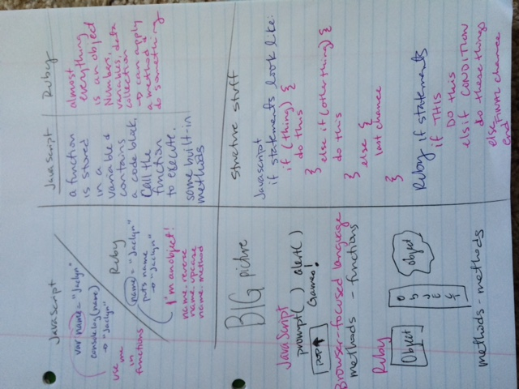

Learning JavaScript basics in 4 days
16 de junio 2015
So, I got married last Friday.
hey world, I'm a married woman now! Needless to say, my study routine was a bit....shortened and hastened last week. I didn't spend as much time studying as I have up to this point and I can feel it. The great thing is that I learned enough JavaScript to dive into some challenges and get some code working in 3 days before the trip and picked it back up after a four day marriage break.
A few things came up while learning JavaScript in just 4 days.
- how is a function different than a method?
- what's with the weird syntax?
- looping. when will I have my ah-ha moment with setting up loops?
- WHY JavaScript? Why would I choose to use JavaScript? What situation calls for me to go into my JavaScript skills? When do I use it (versus Ruby?)
